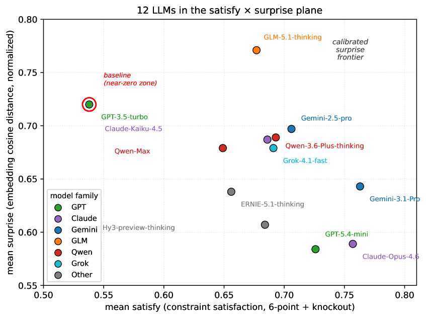

QUIET proposes a multi-blank cascaded story cloze benchmark with an information-theoretic automated scoring protocol that directly measures open-ended creative generation, overcoming the limitations of multiple-choice and rubric-based evaluations.
本文提出QUIET基准，通过多空白级联故事完形填空直接测量LLM的开放式创造性生成能力，并引入信息论自动评分协议。实验发现GPT-3.5-turbo显著落后于其他模型，且人类与LLM在元认知层面存在关键差异。
Deep Note — quiet
Key Takeaways - QUIET is the first benchmark to measure LLM creative generation via open-ended multi-blank story cloze, not multiple-choice discrimination. - Scoring uses a novel formula: score = satisfy * (1 + lambda * surprise), where satisfy is an objective constraint check and surprise is information-theoretic. - GPT-3.5-turbo (6.44/14) significantly underperforms all other tested models (7.46–8.69), with Gemini-3.1-Pro (8.69) leading. - Human participants showed three behavioral patterns (dropout, mediocre, shortlisted) that align with the theoretical framework, while all LLMs completed all blanks—revealing a metacognitive gap. - LLM-as-Judge inter-rater agreement is low (Krippendorff α ≈ 0.27) and insensitive to scale granularity, suggesting systematic judgment drift.
0) Metadata
- Title: QUIET: A Multi-Blank Cascaded Story Cloze Benchmark for LLM Creative Generation Capability
- Alias: quiet
- Authors: Bo Zou, Chao Xu
- arXiv ID: 2605.25955
- Published:
- Links:
- Abs: https://arxiv.org/abs/2605.25955
- HTML: https://arxiv.org/html/2605.25955v1
- PDF: https://arxiv.org/pdf/2605.25955
- Tags: creative-generation, story-cloze, benchmark, llm-evaluation, information-theory
- Domains: ai_safety
- Rating: 4/5 (base 1 + quality 2 + observation 1)
1) Why-read
QUIET proposes a multi-blank cascaded story cloze benchmark with an information-theoretic automated scoring protocol that directly measures open-ended creative generation, overcoming the limitations of multiple-choice and rubric-based evaluations.
2) CRGP
C — Context
Existing LLM creative evaluation relies on three flawed pathways: multiple-choice recognition benchmarks (e.g., Story Cloze Test, HellaSwag) measure discriminative ability, not generation; rubric scoring assumes linear additivity of quality dimensions; and LLM-as-Judge methods measure evaluative expression rather than internal sensitivity. All three lack objective, automated, and reproducible scoring for creative generation.
R — Related work
- Story Cloze Test (Mostafazadeh et al., 2016) and HellaSwag (Zellers et al., 2019) use multiple-choice recognition for narrative continuation.
- Rubric-based scoring decomposes quality into sub-dimensions with linear weighted sums (Ye et al., ICLR 2024).
- LLM-as-Judge methods use models to output natural language scoring rationale.
- Calibrated surprise framework (Zou & Xu, 2026a) provides the theoretical basis for the scoring protocol.
G — Gap
Current benchmarks cannot directly measure LLM creative generation capability in an open-ended setting; they either rely on multiple-choice discrimination, subjective rubric dimensions, or LLM-as-Judge outputs that conflate evaluation expression with true sensitivity. No existing benchmark provides an objective, automated scoring protocol for multi-step creative generation with cascaded constraints.
P — Proposal
QUIET introduces a multi-blank (10–20 blanks) story cloze with explicit content constraints and cascade dependencies between blanks. The evaluated model fills all blanks in open-ended generation mode, and an information-theoretic automated scoring protocol computes per-blank scores as satisfy * (1 + lambda * surprise), where lambda=1.0, rewarding constraint-satisfying surprising answers.
---
4) Experiments
Main results
On 12 commercial LLMs, GPT-3.5-turbo scored 6.44/14, significantly lower than all others (7.46–8.69). Gemini-3.1-Pro (8.69) and Gemini-2.5-pro (8.44) ranked first and second, with GLM-5.1-thinking (8.40) and Claude-Opus-4.6 (8.38) close behind. Spearman sensitivity analysis across 14 aggregation formulas confirmed GPT-3.5 at the bottom and Gemini family at the top.
Ablation
Scoring scale granularity ablation: fine-grained 6-point scoring (α=0.270) vs. coarse 3-tier 0/0.5/1.0 scoring yielded nearly identical Krippendorff α, indicating low inter-rater agreement stems from systematic judgment-criterion drift, not scale granularity.
Limitations
['Low inter-rater agreement (Krippendorff α ≈ 0.27) for LLM-as-Judge scoring limits reliability.', 'Limited discrimination within the modern model cluster (scores 7.46–8.69) suggests ceiling effects.', 'The benchmark currently uses only one story template; generalizability to diverse narrative structures is unverified.']
5) Why it matters
- Provides an objective, automated alternative to subjective rubric and LLM-as-Judge methods for creative evaluation.
- Reveals a metacognitive gap: humans exhibit cascaded difficulty perception (dropout), while LLMs do not—a new dimension for evaluating creative cognition.
- The information-theoretic scoring framework (satisfy × surprise) is mathematically principled and reproducible.
6) Next steps
- [ ] Introduce human-anchored calibration to improve inter-rater agreement in LLM-as-Judge scoring.
- [ ] Expand the benchmark to multiple story templates and domains to test generalizability.
- [ ] Investigate why LLMs lack the 'giving up under difficulty' behavior observed in humans.
- [ ] Explore atomic checks for constraint satisfaction to reduce judgment drift.
7) Scoring
4/5 = base 1 + quality 2 + observation 1
QUIET：面向大语言模型创造性生成能力的多空白级联故事完形填空基准
主要结论 - QUIET是首个通过开放式多空白故事完形填空（而非多项选择判别）来测量LLM创造性生成能力的基准。 - 评分公式为：得分 = 满足度 × (1 + λ × 惊奇度)，其中满足度为客观约束检查，惊奇度为信息论度量。 - GPT-3.5-turbo（6.44/14）显著低于所有其他测试模型（7.46–8.69），Gemini-3.1-Pro（8.69）领先。 - 人类参与者表现出三种行为模式（放弃、平庸、入围），与理论框架一致，而所有LLM均填满了所有空白——揭示了元认知差距。 - LLM作为评判者的评分者间信度较低（Krippendorff α ≈ 0.27），且对评分粒度不敏感，表明存在系统性判断漂移。
1) 阅读理由
QUIET提出了一种多空白级联故事完形填空基准，结合信息论自动评分协议，直接测量开放式创造性生成能力，克服了多项选择和基于量规评估的局限性。
2) CRGP（背景 / 相关工作 / 差距 / 方案）
现有LLM创造性评估依赖三种有缺陷的路径：多项选择识别基准（如Story Cloze Test、HellaSwag）测量的是判别能力而非生成能力；量规评分假设质量维度线性可加；LLM作为评判者的方法测量的是评估表达而非内在敏感性。三者均缺乏客观、自动且可复现的创造性生成评分。相关工作包括Story Cloze Test和HellaSwag使用多项选择识别进行故事续写；量规评分将质量分解为子维度并线性加权求和；LLM作为评判者方法使用模型输出自然语言评分理由；校准惊奇框架提供了评分协议的理论基础。当前基准无法在开放式设置中直接测量LLM创造性生成能力，要么依赖多项选择判别，要么依赖主观量规维度，要么依赖混淆评估表达与真实敏感性的LLM作为评判者输出。QUIET引入了包含显式内容约束和空白间级联依赖的多空白（10–20个空白）故事完形填空，评估模型以开放式生成模式填充所有空白，信息论自动评分协议计算每个空白的得分为满足度 × (1 + λ × 惊奇度)，其中λ=1.0，奖励满足约束的令人惊奇的答案。
3) 实验
在12个商业LLM上，GPT-3.5-turbo得分为6.44/14，显著低于所有其他模型（7.46–8.69）。Gemini-3.1-Pro（8.69）和Gemini-2.5-pro（8.44）排名第一和第二，GLM-5.1-thinking（8.40）和Claude-Opus-4.6（8.38）紧随其后。跨14种聚合公式的Spearman敏感性分析确认GPT-3.5处于底部，Gemini系列处于顶部。
消融实验
评分粒度消融实验：细粒度6点评分（α=0.270）与粗粒度三级0/0.5/1.0评分得到的Krippendorff α几乎相同，表明低评分者间信度源于系统性判断标准漂移，而非评分粒度。
局限性
['LLM作为评判者的评分者间信度较低（Krippendorff α ≈ 0.27），限制了可靠性。', '现代模型集群内区分度有限（得分7.46–8.69），表明存在天花板效应。', '当前基准仅使用一个故事模板，对多样化叙事结构的泛化性尚未验证。']
4) 重要性
- 为创造性评估提供了客观、自动化的替代方案，替代了主观量规和LLM作为评判者的方法。
- 揭示了元认知差距：人类表现出级联困难感知（放弃），而LLM没有——这是评估创造性认知的新维度。
- 信息论评分框架（满足度×惊奇度）在数学上严谨且可复现。
5) 下一步
- [ ] 引入人类锚定校准以提高LLM作为评判者评分的评分者间信度。
- [ ] 将基准扩展到多个故事模板和领域以测试泛化性。
- [ ] 调查为什么LLM缺乏在人类中观察到的“在困难下放弃”的行为。
- [ ] 探索用于约束满足的原子检查以减少判断漂移。
![Figure 2: Composite QUIET score heatmap across 12 models × \times 7 blank
groups (Scheme C, λ = 1.0 \lambda{=}1.0 ; cell value = = satisfy × ( 1 + surprise ) \text{satisfy}\times(1+\text{surprise}) , range [ 0 , 2 ] [0,2] ). Rows are
sorted by QUIET Total (Table 3). The rightmost column and bottom row report
per-model and per-group means; the bottom-right cell is the grand mean. The
heatmap exposes the within-cluster gap noted in Finding 2: most modern
models cluster in the 1.0–1.4 band, while GPT-3.5-turbo’s bottom row stays
consistently below 1.0.](figures/1305/fig_002.png)

![Figure 4: Completion-pattern contrast between the human pilot study (left, N = 135 N{=}135 ) and the 12 evaluated LLMs (right). Humans spontaneously
stratified into three tiers — mid-task dropout (74.07%),
submitted-but-mediocre (22.96%), and shortlisted (2.96%) — whereas every
LLM completed all 36 blanks, with no observed analogue of the human
“give-up under accumulating constraints” behavior. This contrast motivates
treating cascade-state metacognition as a distinct evaluation dimension
beyond raw generation quality.](figures/1305/fig_004.png)